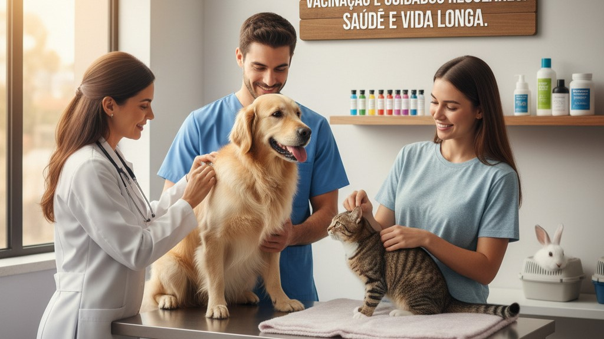

Saúde de Animais de Estimação
A saúde de animais de estimação é um aspecto fundamental para garantir que cães, gatos, pássaros e outros
animais domésticos vivam vidas longas, felizes e saudáveis. A manutenção da saúde de um animal de estimação
envolve diversos fatores, incluindo cuidados veterinários regulares, alimentação adequada, exercício físico,
higiene e prevenção de doenças. Este texto aborda as melhores práticas para garantir a saúde e o bem-estar dos
animais de estimação.
- Exames regulares:
-
Consultas periódicas com um veterinário são essenciais para monitorar a saúde do animal,
atualizar vacinas e detectar precocemente possíveis problemas de saúde. Filhotes geralmente precisam de
visitas mais frequentes, enquanto animais adultos podem ser levados ao veterinário pelo menos uma vez por
ano.
- Vacinação:
-
Manter o calendário de vacinação em dia é crucial para prevenir doenças graves como cinomose,
parvovirose, leptospirose, raiva em cães, e leucemia felina e rinotraqueíte em gatos. A vacinação protege
não apenas o animal, mas também a saúde pública.
- Vermifugação:
-
Administrar vermífugos regularmente ajuda a proteger os animais de parasitas internos, como vermes
intestinais, que podem causar desnutrição e outros problemas de saúde.
- Ração Balanceada:
-
Fornecer uma dieta equilibrada e de alta qualidade, apropriada para a espécie, idade e tamanho do
animal é essencial. Rações comerciais são formuladas para atender às necessidades nutricionais específicas
de cada tipo de animal.
- Evitar Alimentos Tóxicos:
-
Certos alimentos humanos são tóxicos para animais de estimação, como chocolate, uvas,
cebolas e alho. É importante conhecer os alimentos que podem ser prejudiciais e evitar oferecê-los aos
animais.
- Hidratação:
-
Água fresca e limpa deve estar sempre disponível para os animais. A desidratação pode levar a sérios
problemas de saúde.
- Atividade Física:
-
Exercícios regulares ajudam a manter o peso ideal, fortalecem os músculos e melhoram a saúde
cardiovascular dos animais. Cães, por exemplo, precisam de caminhadas diárias, enquanto gatos se beneficiam
de brincadeiras que simulem a caça.
- Estimulação Mental:
-
Jogos e brinquedos interativos são importantes para evitar o tédio e reduzir comportamentos
indesejados. Puzzles, brinquedos que liberam comida e treinamento com comandos são ótimas opções.
- Banhos e Escovação:
-
A frequência dos banhos depende da espécie e da raça do animal. Cães geralmente precisam de banhos
regulares, enquanto gatos podem precisar apenas de escovação frequente para remover pelos soltos e evitar
bolas de pelo.
- Cuidados Dentários:
-
A saúde bucal é frequentemente negligenciada, mas é crucial. Escovar os dentes do animal com
produtos específicos ajuda a prevenir doenças dentárias e mau hálito.
Manter as unhas cortadas evita que elas encravem ou quebrem, o que pode causar dor e infecções.

- Controle de Parasitas:
-
Uso de produtos preventivos contra pulgas, carrapatos e mosquitos ajuda a prevenir doenças
transmitidas por esses parasitas, como a leishmaniose e a doença do carrapato.
- Ambiente Seguro:
-
Manter o ambiente limpo e seguro, livre de objetos que possam ser ingeridos ou causar acidentes, é
fundamental. Isso inclui armazenamento adequado de produtos de limpeza e plantas tóxicas fora do alcance dos
animais.